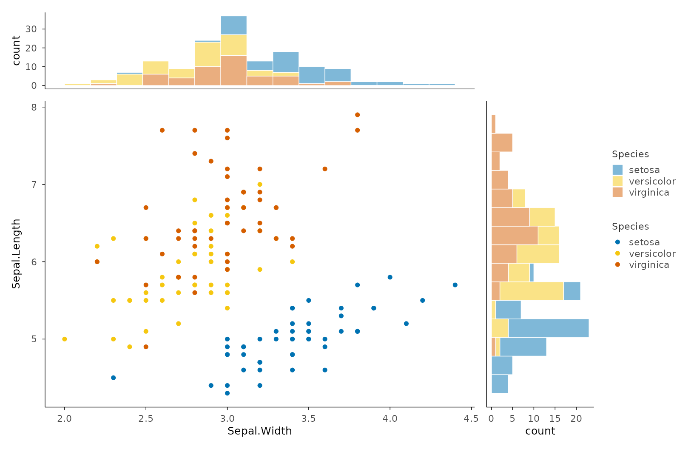

Arranges a main scatter plot with marginal histogram or density plots on the top (x-axis distribution) and right (y-axis distribution). The axes are shared so that the marginal bins align exactly with the scatter axes.
Arguments
- main
A
plotitscatter plot (must have both x and y mapped).- top
A
plotithistogram or density plot for the x variable. Typically built from the same data and x mapping asmain, with the samefill/colouraesthetic to match.- right
A
plotithistogram or density plot for the y variable. Same conventions astop. Callproject_cartesian(flip = TRUE)on this plot before passing it so the y-axis aligns with the scatter.- widths
Relative column widths for the main and right-marginal panels. Default
c(4, 1)= right marginal is 1/5 of total width.- heights
Relative row heights for the top-marginal and main panels. Default
c(1, 4)= top marginal is 1/5 of total height.- guides
"collect"(default) to merge legends across all panels,"keep"to keep them separate,NULLfor patchwork auto-detect.
Value
A plotit_composite object. Pipe to label_title(),
style(), export() as usual.
Examples
main <- plotit(iris, encode(x = Sepal.Width, y = Sepal.Length, colour = Species)) |> mark_point()
top <- plotit(iris, encode(x = Sepal.Width, fill = Species)) |> mark_histogram(bins = 15, alpha = 0.5)
right <- plotit(iris, encode(x = Sepal.Length, fill = Species)) |>
mark_histogram(bins = 15, alpha = 0.5) |>
project_cartesian(flip = TRUE)
compose_marginal(main, top, right)
